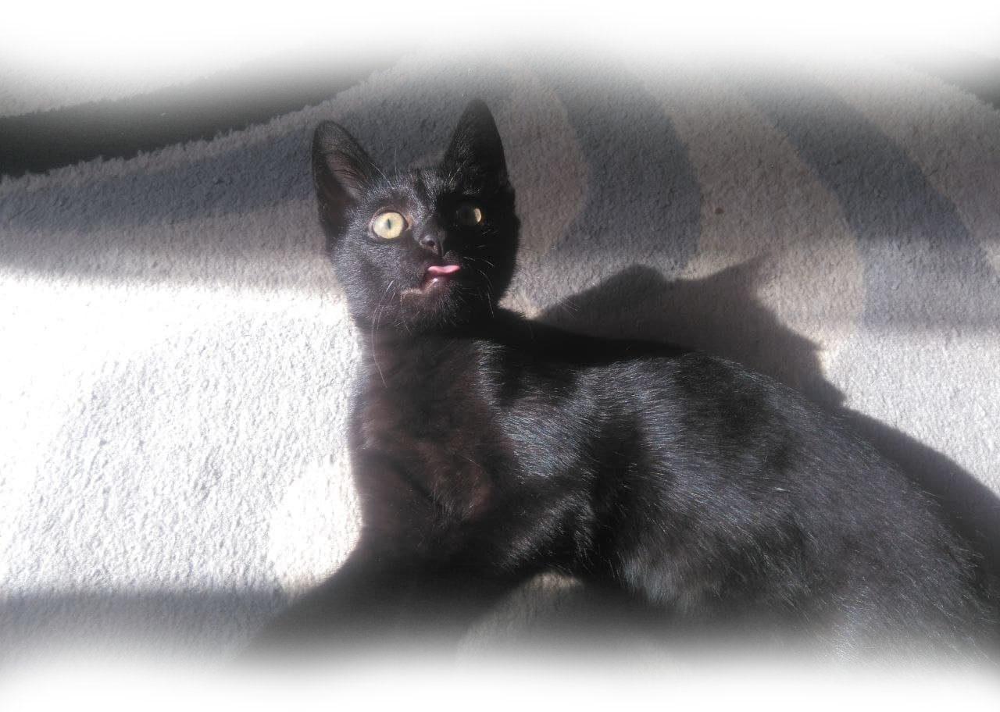
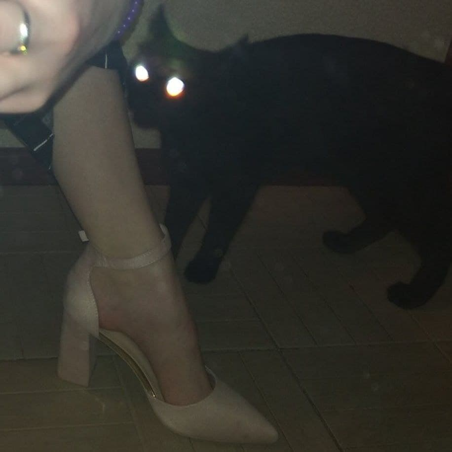
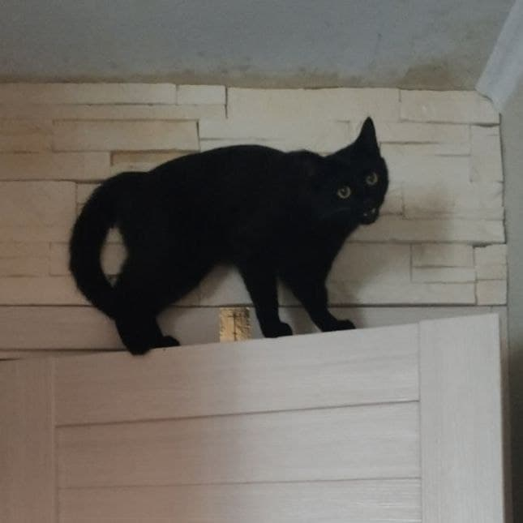
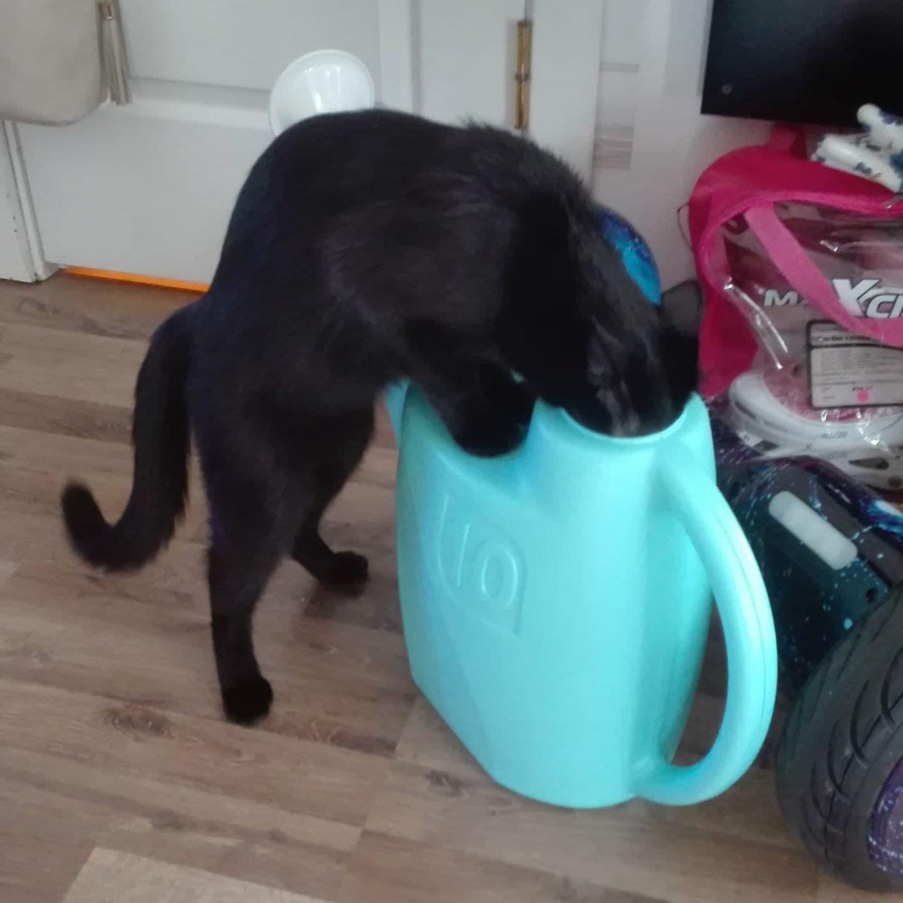

Кот Ёсик
Смешное имя, да? Мы придумали его случайно.
Ему уже 4 года, хотя и ведет себя он как котенок. Даже как чертенок.
Это Ёсик.

Вот еще немного фоторафий Ёсика:



А еще у Ёсика есть лучший друг, Зюзик.
Чтобы увидеть его, нажми
сюда.